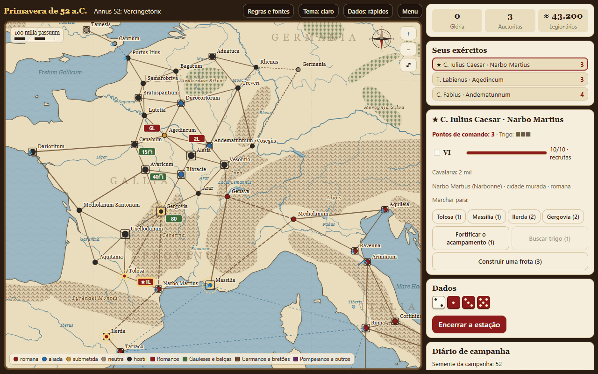

O jogo em um minuto
Você é Caio Júlio César. Comanda legiões num mapa da Gália e do Mediterrâneo, estação por estação, enquanto os inimigos aparecem nas datas e com os números que os relatos antigos registram. Os dados decidem quanto seus exércitos conseguem fazer, quem vence as batalhas e se o mar deixa passar.
Para vencer, cumpra o objetivo do cenário: capturar Vercingetórix, pacificar a Gália ou destruir os exércitos de Pompeu. No caminho, junte Glória e não deixe a Auctoritas, seu crédito político em Roma, acabar.
↑ Voltar ao topoA história
Quase tudo o que sabemos dessas campanhas vem do próprio César: os Commentarii de Bello Gallico e de Bello Civili. São o relato de um dos lados, escrito por quem tinha interesse em engrandecer as próprias vitórias. O jogo usa os números dele; leia-os com esse cuidado.
A Guerra das Gálias (58–51 a.C.)
- 58 — Helvécios e Ariovisto. Os helvécios partem em migração: 368.000 pessoas, 92.000 em armas. [1] César tinha uma só legião na Gália Transalpina; ergue um muro de 19 milhas do lago Lemano ao Jura, alista duas legiões na Itália e traz três de Aquileia. [1] No mesmo ano enfrenta Ariovisto, rei dos suevos, que tinha cerca de 120.000 germanos na Gália e 6.000 cavaleiros. [1]
- 57 — Os belgas. Os remos se entregam e revelam os contingentes da coalizão belga. No Sabis, os nérvios quase vencem; depois, segundo César, de 60.000 homens em armas restaram uns 500. [1]
- 55–54 — O Reno e a Britânia. Usípetes e tencteros atravessam o Reno com 430.000 pessoas. César constrói uma ponte sobre o rio em dez dias e desembarca na Britânia; o Senado decreta vinte dias de ação de graças. [1] No ano seguinte, Cassivelauno o enfrenta com cerca de 4.000 carros de guerra. [1]
- 54–53 — Ambiórix. No inverno, os eburões destroem as tropas de Sabino e Cota: uma legião e cinco coortes, atraídas para fora do acampamento com uma falsa promessa. [1]
- 52 — Vercingetórix. A Gália quase inteira se levanta. Em Avárico, de cerca de 40.000 pessoas, só 800 escapam. Em Gergóvia, César perde 46 centuriões e quase 700 soldados. Em Alésia, Vercingetórix se fecha com 80.000 homens; César cerca a cidade com uma linha de 11 milhas e outra de 14 para fora, e resiste a um exército de socorro de 8.000 cavaleiros e cerca de 250.000 infantes. [1]
- 51 — Uxeloduno. Os últimos rebeldes ficam sem água quando os romanos desviam a fonte por galerias; César manda cortar as mãos de quem pegou em armas. [2]
A Guerra Civil (49–45 a.C.)
- 49 — O Rubicão. Ao atravessar o rio que separava sua província da Itália, César teria dito “Iacta alea est”. [4] Domício se rende em Corfínio com mais de 30 coortes; na Hispânia, Afrânio e Petreio, com cinco legiões, capitulam em Ilerda. [3]
- 48 — Farsália. César cruza o Adriático com sete legiões. Em Farsália, 22.000 homens em 80 coortes vencem 45.000 em 110 coortes, apesar dos 7.000 cavaleiros de Pompeu contra 1.000. Pompeu foge para o Egito e é morto; César chega a Alexandria com 3.200 homens e 800 cavaleiros. [3]
- 47–45 — Zela, Tapso e Munda. Contra Fárnaces, a vitória coube em três palavras: “Veni, vidi, vici”. [4] Depois de Munda, César disse que muitas vezes lutara pela vitória, mas ali pela primeira vez lutara pela vida. [5]
Primeiros passos
| Cenário | Duração | Objetivo |
|---|---|---|
| Annus 52: Vercingetórix | 3 estações e o inverno | Capturar Vercingetórix. Comece por aqui. |
| Bellum Gallicum | 58 a 51 a.C. | Pacificar a Gália: nenhum exército hostil e ao menos 3/4 das regiões submetidas ou aliadas. |
| Bellum Civile | 49 a 45 a.C. | Destruir todos os exércitos pompeianos. |
- Dificuldade. Tiro dá um dado a mais aos romanos, mais pontos de comando e mais moral; Primus pilus dá um dado a mais aos inimigos e os deixa mais ousados.
- Semente. O mesmo número repete os mesmos dados. Use 52 para seguir o exemplo deste tutorial.
- Salvamento. A campanha fica salva no navegador; o botão Continuar volta a ela.
O mapa e o painel

- Cidades. A cor diz a situação: vermelha, romana; azul, aliada; dourada, submetida; cinza, neutra; preta, hostil. O quadrado em volta indica muralhas, e quanto maior, mais forte. A âncora marca os portos.
- Estradas. Linhas cheias custam 1 ponto; tracejadas longas atravessam montanhas e custam 2; pontilhadas azuis são rotas marítimas. A pontilhada até a Germânia só pode ser usada depois de construir a ponte sobre o Reno.
- Fichas. As vermelhas são seus exércitos: ★ marca César e o número diz quantas legiões (6L). As outras são inimigos, com milhares de homens; o símbolo de muralha indica que estão dentro da cidade.
- Painel. Mostra os pontos de comando do exército escolhido, o trigo (■■■), as legiões com as coortes (até 10) e a experiência, e os botões de ordens.
- Navegação. Arraste para mover o mapa, use a roda do mouse ou os botões + e − para o zoom e ⤢ para voltar à vista inicial. A escala em milia passuum (milhas romanas de 1,48 km) acompanha o zoom.
O relevo, os rios e os litorais vêm do Natural Earth, e os nomes de montes, rios e mares estão em latim. [6]
↑ Voltar ao topoUma estação, passo a passo
O ano tem três estações de campanha (primavera, verão e outono) e o inverno. Cada estação segue esta ordem:
- Fortuna. Um dado traz chuvas (−1 ponto para cada exército), comboios de trigo, batedores (+1 ponto para César) ou bons auspícios (+1 Auctoritas).
- Comando. Cada exército rola um dado. César recebe 2 + metade do dado, arredondada para cima; um legado, 1 + metade. É a celeritas de César: ele age mais.
- Suas ordens. Escolha um exército e gaste os pontos:
| Ordem | Custo | Para quê |
|---|---|---|
| Marchar | 1 ou 2 | Ir a uma cidade vizinha. Se houver inimigos em campo, há batalha. |
| Navegar | 2 ou 3 | Ir de um porto a outro. Pode haver tempestade e, na Guerra Civil, a frota pompeiana. |
| Fortificar o acampamento | 1 | +3 dados se for atacado, até sair do lugar. |
| Buscar trigo | 1 | Recupera o trigo se o dado ajudar. |
| Obras de cerco / Assaltar | 1 | Contra inimigos atrás de muralhas. |
| Exigir reféns | 1 | Submete uma região neutra ou hostil sem inimigos. |
| Ponte sobre o Reno / Frota | 2 / 3 | Abre a Germânia; permite cercar cidades costeiras. |
| Destacar / Unir | 0 | Divide as legiões sob um legado ou junta dois exércitos. |
- Encerrar a estação (botão ou tecla E). Os inimigos agem: migrantes seguem sua rota, exércitos de campo atacam quando se acham mais fortes e guarnições ficam atrás das muralhas.
- Trigo e víveres. Exércitos em terra romana, aliada ou submetida se reabastecem; os outros gastam trigo. Os sitiados consomem víveres.
Os eventos históricos
Os inimigos entram no jogo nas datas dos relatos: os helvécios na primavera de 58, Ariovisto no verão, os belgas em 57, a revolta de Vercingetórix em 52, a defecção dos éduos depois de Gergóvia. [1] Alguns eventos dependem do que você faz: o exército de socorro só aparece quando Vercingetórix está cercado; a morte de Pompeu, só depois que o exército dele é destruído. [3]
Num deles você decide como os legados decidiram: Ambiórix oferece passagem livre às coortes que deixarem o acampamento. Cota queria resistir; Sabino aceitou e foi destruído. [1] No jogo, aceitar dá aos eburões a vantagem da emboscada.
↑ Voltar ao topoCercos e assaltos
Inimigos dentro de muralhas não lutam em campo. Você tem dois caminhos:
- Obras de cerco. Cada ordem soma um dado + metade do número de legiões (+2 com César). A cidade cai quando o total chega a 6 vezes a fortificação: 12 em Cenabo, 24 em Alésia. A cada estação, os sitiados gastam um ponto de víveres; sem víveres, rendem-se. Não custa coortes, só tempo.
- Assalto. É uma batalha em que o defensor ganha dados pelas muralhas (fortificação + 1). É rápido, mas custa homens.
Os vênetos e Massília se abastecem pelo mar: só um exército com frota consegue cercá-los, como César fez com a frota de Décimo Bruto. [1]
↑ Voltar ao topoAs batalhas
- Força de combate. Cada coorte vale 1 (veteranos 1,35; elite 1,7). Mil gauleses valem 0,6 vezes a qualidade; mil legionários pompeianos valem 2. Cavalaria vale 0,8 por mil.
- Dados. Um dado para cada 7 pontos, mais os modificadores: terreno do defensor (colina +2, floresta +1), muralhas, acampamento (+3), cavalaria superior (+1), César (+1), fome (−2), emboscada (+3 na primeira rodada).
- Acertos. Legiões veteranas acertam com 4 a 6; recrutas e bárbaros, com 5 ou 6. Cada acerto tira 3 pontos de força do inimigo.
- Moral. Depois de cada rodada, quem sofreu mais rola 2d6. Acima do valor de moral, foge, e a cavalaria do vencedor persegue. César pode reanimar a tropa uma vez por batalha, como fez no Sabis. [1]
- Fim. Depois de três rodadas sem fuga, a batalha empata; se foi você quem atacou, o inimigo recua para uma cidade vizinha. Se o exército de César foge, há uma chance pequena de ele morrer.
Trigo e inverno
César fala do trigo, a res frumentaria, quase tanto quanto das batalhas. No jogo, cada exército tem até 3 de trigo. Fora de terra amiga, perde 1 por estação; com 0, as legiões perdem coortes por fome e deserção e lutam com 2 dados a menos.
- Exércitos em quartéis amigos recuperam 1 coorte por legião; fora deles, perdem 2.
- Legiões que venceram no ano podem passar de recrutas a veteranas e de veteranas a elite.
- As vitórias do ano rendem até 3 de Auctoritas. Reforçar uma legião custa 1; alistar uma nova, 3. Abaixo de −3, o Senado chama César de volta e a campanha acaba.
- Regiões submetidas sem tropa podem se revoltar, sobretudo de 54 a 52 a.C.
Sua primeira campanha: o ano 52
Comece o cenário Annus 52 com a semente 52 e a dificuldade Veteranus. As telas deste tutorial são dessa partida, jogada por cliques reais. [7]
- Leia a situação. César está em Narbo com uma legião de recrutas (VI) e 2.000 cavaleiros. Labieno tem seis legiões em Agedinco; Fábio tem duas em Andematuno. Vercingetórix está em Gergóvia com 80.000 homens, e há guarnições em Avárico (40.000) e Cenabo (15.000).
- Labieno ataca Cenabo. Escolha Labieno, marche para Cenabo (1 ponto) e dê uma ordem de cerco: as obras chegam a 7 de 12. Com o último ponto, assalte: 14 dados contra 4, oito acertos na primeira rodada, e a cidade cai. Custo: 2 coortes; ganho: 5 de Glória.
- Tire César do perigo. Sozinho com uma legião de recrutas, César não vence ninguém (veja Táticas). Leve-o por Massília até Genava (3 pontos), a caminho das legiões do norte. Vercingetórix não persegue exércitos dentro da Província, mas fora dela a legião VI seria presa fácil.
- Encerre a estação. No verão chega o evento da defecção dos éduos: Bibracte vira hostil, e Litavico entra em campo com 30.000 homens.
- Próximos passos. Leve César até Fábio (Genava → Vesontio → Andematuno) e una os exércitos; mande Labieno cercar Avárico. Quando Vercingetórix perder uma batalha, ele se fecha num oppidum, como em Alésia. O exército de socorro aparece assim que ele é cercado e ataca na estação seguinte: leve as obras de cerco a pelo menos 2 vezes a fortificação antes disso, porque as linhas de circunvalação dão +4 dados.
Se você só encerrar as estações depois disso, como na partida das telas, o ano termina sem capturar Vercingetórix: o objetivo não é cumprido, e o título é o de Propraetor esquecido.
↑ Voltar ao topoTáticas de batalha
Simulamos 4.000 batalhas para cada situação com o motor do jogo, na dificuldade Veteranus. A referência: quatro legiões veteranas e 1.000 cavaleiros, sob um legado, atacam 60.000 gauleses com 2.000 cavaleiros numa planície. [7]
| Situação | Vitória | Derrota | Empate | Coortes perdidas |
|---|---|---|---|---|
| Referência | 81,7% | 3,1% | 15,3% | 9,5 |
| Com César no comando | 90,1% | 0,0% | 9,9% | 9,0 |
| Seis legiões em vez de quatro | 98,5% | 0,5% | 1,0% | 8,0 |
| Legiões de elite | 94,7% | 0,6% | 4,7% | 7,1 |
| Legiões de recrutas | 36,8% | 25,8% | 37,5% | 15,4 |
| Cavalaria superior (4.000) | 90,4% | 1,1% | 8,4% | 7,7 |
| Inimigo numa colina | 76,6% | 7,1% | 16,3% | 12,9 |
| Sem trigo | 60,2% | 12,0% | 27,8% | 10,2 |
| Atacado em campo aberto | 80,9% | 3,3% | 15,8% | 9,4 |
| Atacado em acampamento fortificado | 97,0% | 0,7% | 2,3% | 8,4 |
Leve César à batalha
A presença dele acabou com as derrotas da referência e subiu a vitória de 81,7% para 90,1%.
Concentre as legiões
Seis legiões em vez de quatro: 98,5% de vitória e menos perdas. Dividir o exército só vale para cercos e para guardar regiões.
Não mande recrutas sozinhos
Com recrutas, a vitória cai para 36,8%. Junte as legiões novas às veteranas até que ganhem experiência no inverno.
Espere atrás da paliçada
Atacado num acampamento fortificado, o exército venceu 97,0% das vezes, contra 80,9% em campo aberto. Fortifique antes de encerrar a estação perto do inimigo.
Não ataque morro acima com fome
A colina do inimigo baixou a vitória para 76,6% e aumentou as perdas; a fome, para 60,2%. Gergóvia foi as duas coisas.
Situações históricas
| Situação | Vitória | Empate | Coortes perdidas |
|---|---|---|---|
| Assalto a Avárico: 6 legiões e César contra 40.000 atrás de muralhas | 100% | 0% | 6,6 |
| Socorro de Alésia sem linhas: 10 legiões e César contra 250.000 | 72,3% | 27,5% | 26,8 |
| Socorro de Alésia com as linhas de circunvalação | 79,7% | 20,2% | 25,3 |
| Farsália: 8 legiões de elite e César atacam 45.000 pompeianos | 58,6% | 41,3% | 18,1 |
| Farsália, esperando o ataque no acampamento | 74,1% | 25,9% | 17,4 |
São modelos do jogo, não da história. Medem as regras: um assalto como o de Avárico vence sempre, mas custa coortes que o cerco pouparia, e contra Pompeu é melhor deixar que ele ataque.
↑ Voltar ao topoEstratégias de campanha
- Mantenha César com o exército principal. Ele dá mais pontos de comando, um dado a mais e a nova rolagem de moral.
- Termine cada estação em terra amiga ou busque trigo antes. Um exército sem trigo luta mal e perde coortes.
- Submeta depois de vencer. A ordem de exigir reféns ganha +1 no ano em que você tem uma vitória. Regiões submetidas dão trigo e contam para o objetivo da Gália.
- Inverne em quartéis amigos. Fora deles, cada legião perde 2 coortes.
- Guarde Auctoritas para os anos difíceis. A revolta de 52 e a Guerra Civil exigem legiões novas. Saques em terras aliadas e derrotas custam Auctoritas.
- Busque as façanhas. Entrar na Germânia pela ponte do Reno vale 4 de Glória; o desembarque na Britânia, 5; vencer Fárnaces com César, 5.
- Na Guerra Civil, use a clemência. Guarnições pompeianas que se rendem, como a de Corfínio, viram uma legião nova para você. [3]
- Atravesse o Adriático com cuidado. Enquanto a frota pompeiana vigia, cada travessia tem 1 chance em 6 de perder coortes e 2 em 6 de voltar ao porto.
- Diante de Ambiórix, resista no acampamento. Sair dá ao inimigo +3 dados de emboscada.
Erros comuns
- Deixar César sozinho com poucas legiões ao alcance de um exército grande.
- Encerrar a estação em território hostil sem buscar trigo.
- Assaltar quando dá para cercar. As coortes perdidas fazem falta na batalha decisiva.
- Esquecer as linhas em Alésia. O socorro ataca na estação seguinte ao cerco; sem as obras em 2 vezes a fortificação, não há o bônus.
- Gastar toda a Auctoritas no primeiro inverno e ficar sem margem para as derrotas.
- Navegar sem porto. As rotas marítimas só ligam cidades com âncora.
Glossário
- Auctoritas
- O prestígio político de César em Roma; paga reforços e acaba a campanha se cair abaixo de −3.
- Celeritas
- A rapidez de César; no jogo, mais pontos de comando.
- Circunvalação
- Linhas de cerco em volta da cidade e contra quem vem de fora, como em Alésia.
- Clementia
- O perdão de César aos vencidos; no jogo, guarnições romanas rendidas viram legião.
- Coorte
- A décima parte de uma legião, cerca de 480 homens.
- Glória
- A pontuação: vitórias, cidades tomadas, regiões submetidas e façanhas.
- Hiberna
- Quartéis de inverno.
- Legado
- Oficial que comanda um exército em nome de César, como Labieno.
- Milia passuum
- Milhas romanas, de mil passos duplos: cerca de 1,48 km.
- Oppidum
- Cidade fortificada gaulesa, em geral numa colina.
- Res frumentaria
- O abastecimento de trigo do exército.
Revisão rápida
Em resumo
- Cada estação: Fortuna, pontos de comando, suas ordens, os inimigos, o trigo.
- Batalhas: um dado a cada 7 pontos de força; veteranos acertam com 4+; depois, moral com 2d6.
- Cercos poupam homens; assaltos poupam tempo.
- César com o exército principal, legiões concentradas, acampamento fortificado.
- Termine as estações e o inverno em terra amiga.
1. O dado de comando de César deu 3. Quantos pontos ele tem?
4: 2 + metade do dado arredondada para cima (2).
2. Seu exército tem força 56. Quantos dados rola, sem modificadores?
8: um dado para cada 7 pontos.
3. Quanto o cerco precisa somar para tomar Alésia, de fortificação 4?
24, 6 vezes a fortificação. E 8 para ativar as linhas contra o socorro.
4. Ambiórix oferece passagem livre se você sair do acampamento. O que fazer?
Resistir. Sair dá ao inimigo +3 dados de emboscada, como aconteceu com Sabino e Cota.
5. Qual é a situação mais perigosa das medições?
Legiões de recrutas: só 36,8% de vitória e 25,8% de derrota.
6. Quanto custa alistar uma legião nova?
3 de Auctoritas, no inverno.
Referências
- César. Commentarii de Bello Gallico, livros I a VII, texto latino em The Latin Library. Helvécios (I.5–29), Ariovisto (I.31–53), belgas e nérvios (II), vênetos (III), Reno e Britânia (IV–V), Ambiórix (V.24–52), Vercingetórix, Avárico, Gergóvia e Alésia (VII).
- Hírcio. De Bello Gallico, livro VIII, em The Latin Library. Uxeloduno (VIII.32–44).
- César. Commentarii de Bello Civili, em The Latin Library. Corfínio (I.15–23), Ilerda (I.38–87), travessia do Adriático (III.6), Farsália (III.84–99), Alexandria (III.103–112).
- Suetônio. Divus Iulius, em The Latin Library. “Iacta alea est” (32) e “Veni, vidi, vici” (37).
- Plutarco. Vida de César, tradução de B. Perrin, em LacusCurtius. Munda (56).
- Natural Earth. naturalearthdata.com. Terra, lagos, rios e cordilheiras, em domínio público. Os litorais são os atuais.
- Medições próprias com o motor do jogo As Campanhas de César: a partida das telas (semente 52) e 4.000 batalhas simuladas por situação. Medem as regras do jogo, não a história.